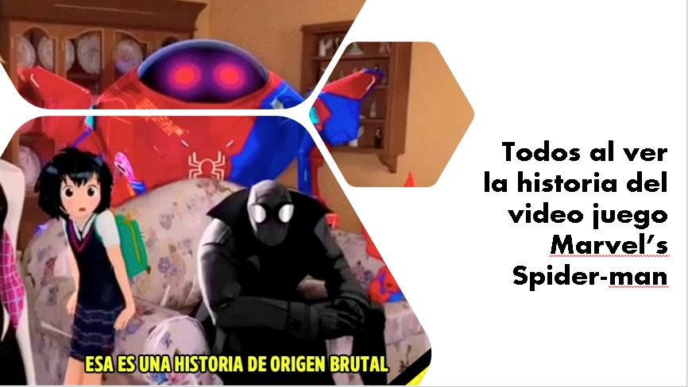

En este blog se intentará hablar de todo sobre el personaje de Spider-man, tanto su cronología,
así como su importancia, datos curiosos, su contexto de creación, su creador o su razón de ser
un personaje tan conocido y querido, etc. Para esto se abarcará desde sus inicios en los comics
de Marvel hasta su situación actual con las películas del cine y las series de televisión.
Desarrollo
Spider-man es un personaje creado por Stan Lee y Steve Ditko e introducido en el cómic "Amazing
Fantasy n.° 15", publicado por Marvel Comics en agosto de 1962.Se trata de un superhéroe que
emplea sus habilidades sobrehumanas, para combatir a otros supervillanos que persiguen fines
siniestros.
Desde que fue creado, este personaje siempre ha tenido la característica de ser un adolscente
promedio (Claro, antes de conseguir sus poderes), lo cual ha permitido que la audiencia se
pudiera identificar con él y así rápidamente se convirtiera en uno de los personajes más famosos
de Marvel Comics si no es que de todo el campo de los superhéroes, pues ha logrado que, sin
importar su addaptación, siempre logre volver a caernos bien e identificarnos con él.
Motivación
Escogi este tema porque Spider-man es un personaje que desde la primera vez que lo ví hace mucho
tiempo, ha sido de los personajes que más me gustan, que me llama la atención, y que se ha
vuelto muy importante para mí pues ha cambiado mi vida. Tal vez es importante para muchas otras
personas, por lo que quisiera aprovechar este blog para ayudarme también a conocer mejor al
personaje.
<<<<<<< HEAD
=======
El hombre araña ha logrado volverse parte de la
cultura popular.
>>>>>>> 91cafc45fd178b7dbc610d02ff3ec1586c2ddb25
Villanos de mayor relevancia
08/Junio/2022
Rhimo (Aleksei Sytsevich)
Sandman (Flint Marko)
Mysterio (Quentin Beck)
Lagarto (Curtis "Curt" Connors)
Electro (Maxwell Dillon)
Kraven el cazador (Sergei Kravinoff)
Carnage (Cletus Cortland Kasady)
Venom (Eddie brock)
Doctor Octopus (Otto Gunther Octavius)
Duende Verde (Norman Virgil Osborn)
Peter Parker o Spider-man ha tenido que enfrentarse a poderosos enemigos, quienes se han vuelto
parte de la cultura popular al igual que el hombre araña. Por eso es este ranking, con
personajes como Doctor Octopus, Mysterio, Lagarto, Electro entre otros, que lo han hecho o
incluso lo han hecho perder seres queridos importantes. Así han surgido historias geniales como
en la que el Doctor Octopus intercambia de cuerpos con el hombre araña o personajes memorables
como lo es Flint Marco (En la película de Spider-man 3)
Además de los villanos que dije, existen muchos más
en los comics. En esta imagen
pueden ver algunos.
Si logro hacer que ha ustedes tamnién les guste el hombre araña, entonces aquí hay unas páginas
oficiales para que puedan conocer mejor a los personajes, ya sea en los comics, en la
televisión, en el cine. Estas páginas son oficiales y contienen bastante información del
personaje, incluso hasta uno podría comprar mercancia bastante interesante del personaje.
El hombre araña ha sido muy importante incluso para la industria de los juguetes y
videojuegos.
Videos de Youtube para tener mas información
08/Junio/2022
Hecho por el canal "Uncharted Robbie" el 29 Noviembre del 2021
A lo largo de los miles de universos del multiverso marvel estos sucesos se han llevado a cabo de
otra manera. En la tierra 65 Gwen jamás muere a manos del duende verde y es mordida por una
araña radioactiva la cual le da sus poderes arácnidos que no son suficientes para prevenir la
muerte de su amigo peter parker mientras que en la tierra 51 1412 Patton Partner utiliza sus
poderes para vengarse de su tío y se transforma en un monstruo arácnido que casi mata a su
vecina sarah jane.
Existen miles de versiones de spider-man ya que a lo largo del multiverso la historia original
que conocemos de él ha sufrido muchísimas variaciones que dan como resultado historias y
realidades completamente diferentes en el multiverso de Marvel.
El video me parece bueno, resume bastante bien la cronología del Spider-verse desde sus inicios
hasta la actualidad, cuidando pasar por todos los momentos importantes. Además, tiene bastante
información, que aunque haga al video muy largo, lo hace bastante completo y permite entender
bien el tema. Además la manera de narrar y de hablar del youtuber es bastante buena.
Cronología de Spider-man (Investigación)
08/Junio/2022
Después de la muerte de sus padres, su tío lo cuidó. En una feria de ciencias, obtuvo poderes de
araña después de ser mordido por una araña radiactiva. Como Spider-Man, fingió ser famoso con la
ayuda de su representante Maxi Schiffman, pero Aprendió la lección después de negarse a
detener a un ladrón que luego mataría a su tío Ben, no sin antes decir las sabias
palabras de "Un gran poder conlleva... ¡una gran responsabilidad!"
Un señor llamado J. Jonah Janson Junior se obsesiona con el Y su propósito en la vida es
hundir su imagen.
Peter descubre que la manera más fácil de ganar dinero para la tía May es trabajar para este
señor vendiendole
fotos de Spider-Man y sus villanos como:
electro, doctor octopus, lagarto, Kraven el cazador, rhino, el duende verde, lagarto,
misterio, el hombre de arena, escorpión, etc.
Uno de estos (el duende verde) le mato a su novia de ese entonces Gwen Stacy, aunque después
conoce a otra conocida como Mary Jane
En un evento de Marvel conocido como secret wars, spider-man se le rompió el traje, pero
encontró al simbionte conocido como Venom
desde hay spider man tuvo mas conflictos económicos
en el conflicto conocido como Civill War
Durante una conferencia de prensa, Spider-Man revela su identidad de Peter Parker en
televisión.
Por supuesto, muy pronto resulta ser una mala decisión.
esto afecta su vida, a tal grado que casi le matan a su tía
esto puso muy triste con Peter, con lo que decide hacer un trato con el villano (Mephisto), para
que la gente olvidara quien es el, a cambio le daria su matrimonio con MJ, ambos aceptarían.
Después de mucho tiempo Spider-man tuvo un conflicto con el villano Doctor Octopus.
Otto Octavius supuestamente mejorado que ha tomado el cuerpo de Peter Parker y, habiendo
permitido a Peter que muera en el cuerpo de Octavius, pero este afectado por los recuerdos de
Peter, está decidido a ser un mejor hombre araña que el anterior, y un hombre mejor que Otto
Octavius, después hace a Peter millonario con una empresa Industrias Parker.
Spider-Man ha sido uno de los personajes que más han sufrido a lo largo de toda su
vida, incluso más que otros personajes. Esto nos hace tenerle más cariño.
Mi Video de Youtube
09/Junio/2022
Hecho por Ismael Castro Monroy el 9 de Junio del 2022
Meme del "Spider-verse"
09/Junio/2022
Hecho por Ismael Castro Monroy el 9 de Junio del 2022
Meme del vdeojuego de Spider-man
09/Junio/2022

Hecho por Ismael Castro Monroy el 9 de Junio del 2022
 Villanos de mayor relevancia
Villanos de mayor relevancia Sitios oficiales
Sitios oficiales
 Meme del "Spider-verse"
Meme del "Spider-verse"